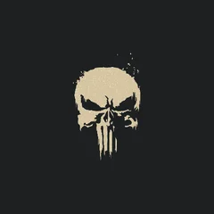
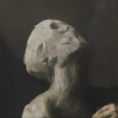

A six-month residency for artists who make Omarchy beautiful. Themes, plugins, and whatever else. The point is to let creativity flow with the support of the Omacom Foundation. Up to five seats at any one time.
cat air/hancore.md

Solitude and Last Horizon both ship with Omarchy, and another twenty of his themes sit on the extras page — more than anyone else has contributed: Batou, Oxo Carbon, Velvet Night, Rose of Dune, Shades of Jade, and on it goes. He’s a mechanical engineer who became one of the defining aesthetic forces in this community, sits on Omarchy Core, and helps steward the plugin ecosystem.
cat air/oldjobobo.md

Three of the themes that ship with Omarchy are his — Lumon, Miasma, and Retro 82 — and another ten sit on the extras page, from Batman to City-783 to Sakura Mochi. He works in whole palettes rather than one-off colour schemes, which is why his themes hold together across the terminal, Neovim, btop, and the shell instead of just looking good in a screenshot.
cat air/taha.md
cat air/README.md
Remaining seats by invitation